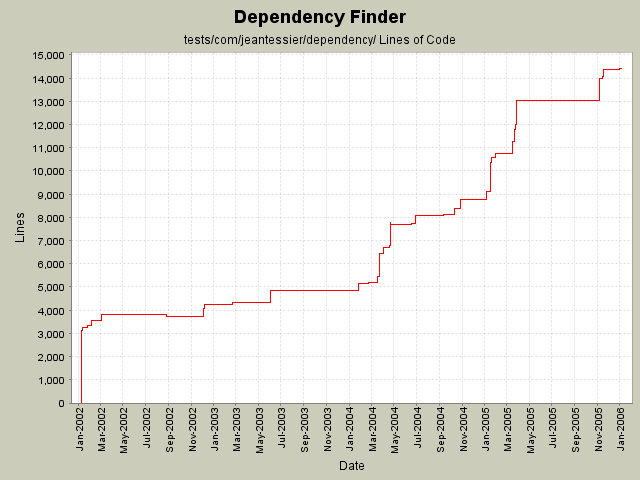

Summary Period: 2002-01-10 to 2006-01-04
[root]/tests/com/jeantessier/dependency

Total Lines Of Code:
14402 (2006-01-04 08:56)
| Author | Changes | Lines of Code | Lines per Change |
|---|---|---|---|
| jeantessier | 395 (100.0%) | 32794 (100.0%) | 83.0 |
Escape parentheses when converting node names to regular expressions in URLs
30 lines of code changed in:
Use new JAXP 1.3 constructs
33 lines of code changed in:
Remove Xalan JARs, use implementation from JDK instead.
18 lines of code changed in:
Make cycles comparable
321 lines of code changed in:
Put maximum on cycle length
22 lines of code changed in:
Heal tests
66 lines of code changed in:
New class for detecting cycles in the dependency graph (between packages only for now)
75 lines of code changed in:
Merge redesign for published API JarJarDiff
949 lines of code changed in:
Minor clean up
0 lines of code changed in:
Clean up extra "throws" clauses and unused parameters
2 lines of code changed in:
Line up equal signs
56 lines of code changed in:
Conditional highlighting of inferred nodes
28 lines of code changed in:
Read confirmed vs inferred info from XML
1091 lines of code changed in:
Copy confirmed status while computing closure
272 lines of code changed in:
Added attribute for confirmed status of nodes
195 lines of code changed in:
Test conditional highlight of inferred nodes
30 lines of code changed in:
Distinguish inferred from confirmed nodes
450 lines of code changed in:
Carry confirmed status across GraphCopier and GraphSummarizer
538 lines of code changed in:
Rename "concrete" nodes to "confirmed"
356 lines of code changed in:
Use only spaces for indentation
9378 lines of code changed in:
(46 more)
Generated by StatCVS 0.2.2